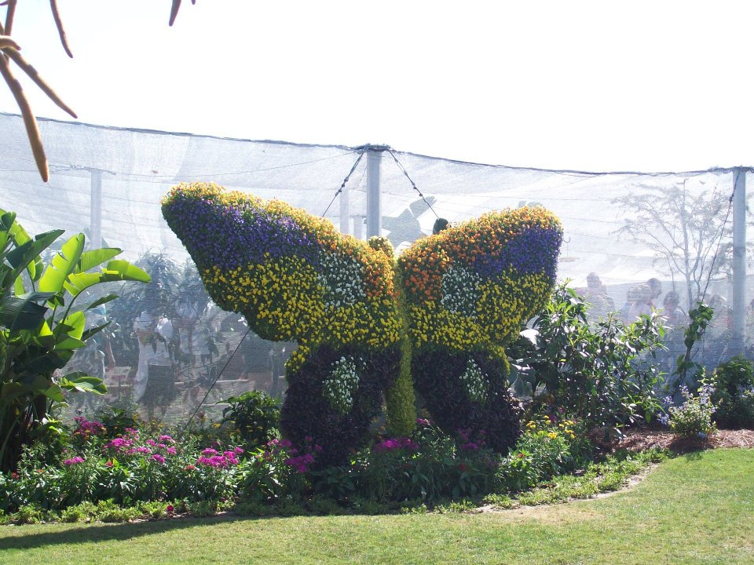

EDUCATION
Iowa State University: Ames, IA | Bachelor of Science, Technical Communication
Expected Graduation: May 2018
WORK EXPERIENCE
- Electrical & Computer Engineering Student Services: Ames, IA (August 2016 - Present)
- Assisted in appointment scheduling and entering important information
- Cyclone Aide: Ames, IA (January 2016 – January 2017)
- Helped acclimate incoming freshman students during summer orientation
- KONE Customer Care Center: Moline, IL (June 2015 – August 2015)
- Provided customer service to companies with broken elevator or escalator equipment
- Clyde’s Sports Club/West Side Market: Ames, IA (August 2014 - May 2016)
- Prepped/Cooked food to be sold to customers
SKILLS
Programming Languages: HTML, CSS, JavaScript, C, Java
Frameworks: Bootstrap, AngularJS
Tools: Microsoft Office
ACTIVITIES
- Society of Technical Communication, Spring 2017-Present
- President (Spring 2017-Present)
- T.E.A.M. Tour Guide, Summer 2016-Fall 2016
- HackISU, Spring 2016
- Destination Iowa State Team Leader, Fall 2015
- Sigma Lambda Gamma National Sorority Inc., Fall 2014 - Present
- Historian (Spring 2015)
- Ritual Chair (Spring 2015)
- Vice President of Recruitment (Fall 2015-Spring 2016)
- Leadership through Engineering Academic Diversity Learning Community, 2014 -2015
- Academic Program for Excellence for Engineers (APEX-E), Summer 2014

Picture by Breayona Reed